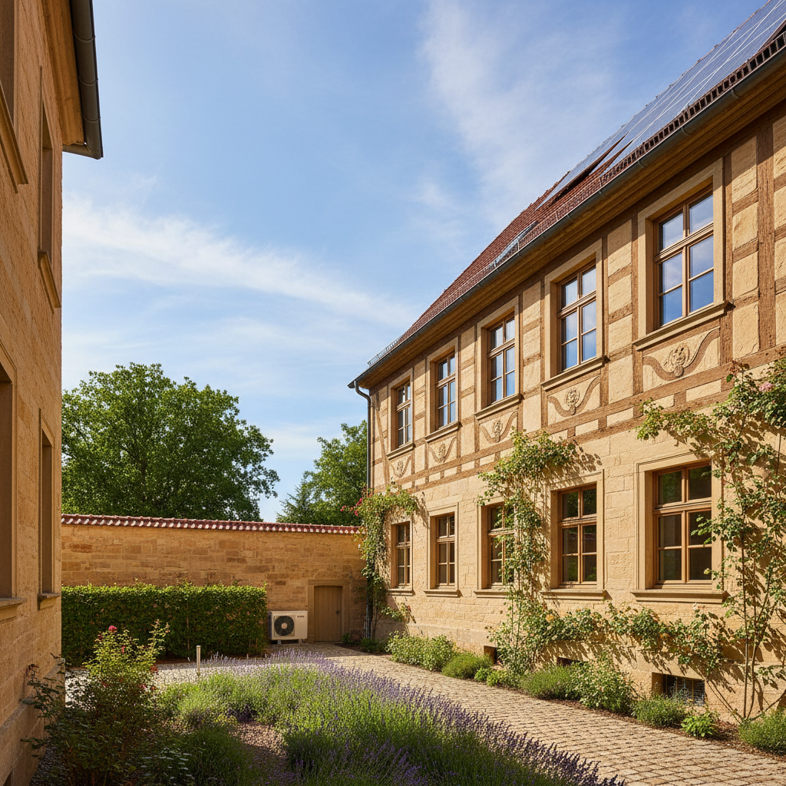

Altbausanierung eines Stadthauses in Weimar
- Ausgangslage:
- Ein denkmalgeschütztes Stadthaus mit hohem Energieverbrauch durch undichte Fenster, ungedämmtes Dach und veraltete Gasheizung.
- Lösung:
- Erstellung eines iSFP, Planung einer Innendämmung, Austausch der Fenster durch denkmalgerechte Modelle und Installation einer modernen Gas-Brennwerttherme.
- Ergebnis:
- Heizkosten um über 40% gesenkt, historischer Charakter erhalten, Wohnkomfort erheblich gesteigert und maximale KfW-Förderung gesichert.